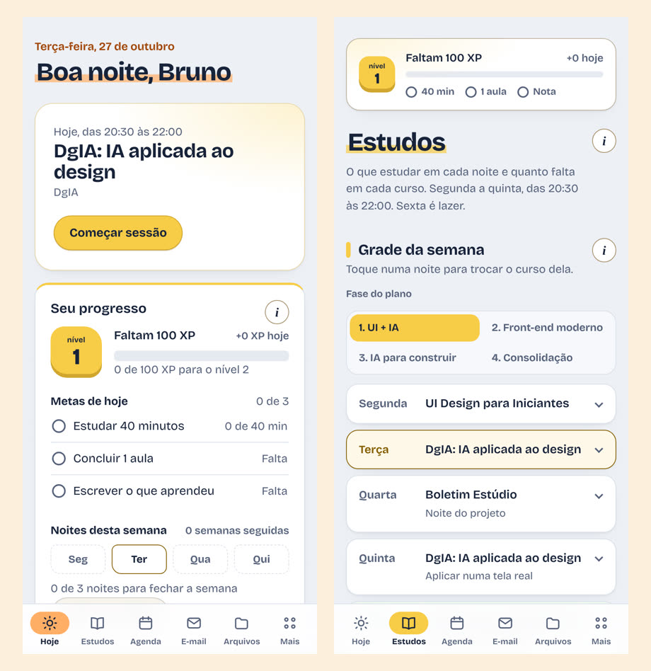

BrGestão Pessoal
Um assistente pessoal que junta estudos, agenda, e-mail, arquivos e carreira num app só.
- O problema
- Cursos parados, e-mail acumulando em duas contas, a pasta Downloads lotada de arquivos 3D e o LinkedIn desatualizado. Cada coisa num lugar diferente.
- Onde roda
- App instalável (PWA) no celular e no PC, com os dados sincronizados na nuvem.
- Onde a IA entra
- O Gemini resume vídeos, monta um mini curso a partir deles e propõe o texto de cada seção do LinkedIn. A triagem de e-mail é feita por regras, sem IA.
Como funciona
Toque num passo para ver onde ele acontece no diagrama.

Decisões que eu defendo
- Os módulos (Estudos, Agenda, E-mail, Arquivos, Vagas, LinkedIn) só conversam por eventos. Um curso concluído vira pontos na gamificação e sugestão para o LinkedIn sem que um módulo conheça o outro.
- Nenhuma automação apaga nada. O que parece lixo, no e-mail ou nos arquivos, vai para uma pasta Excluir e espera a minha confirmação.
- O banco usa Row Level Security: cada linha só pode ser lida pelo dono, mesmo com a chave pública no app.
- Toda chamada à IA tem limite de tempo e modelo reserva. Se o Gemini não responde, a tela diz isso em vez de ficar carregando.
Limites
Uso pessoal, com uma pessoa só. O LinkedIn não tem API para editar perfil, então o app propõe o texto e eu aplico.
Tecnologias
- React
- TypeScript
- Vite
- PWA
- Supabase (Postgres e Edge Functions)
- Gemini API
- Vercel
- Vitest